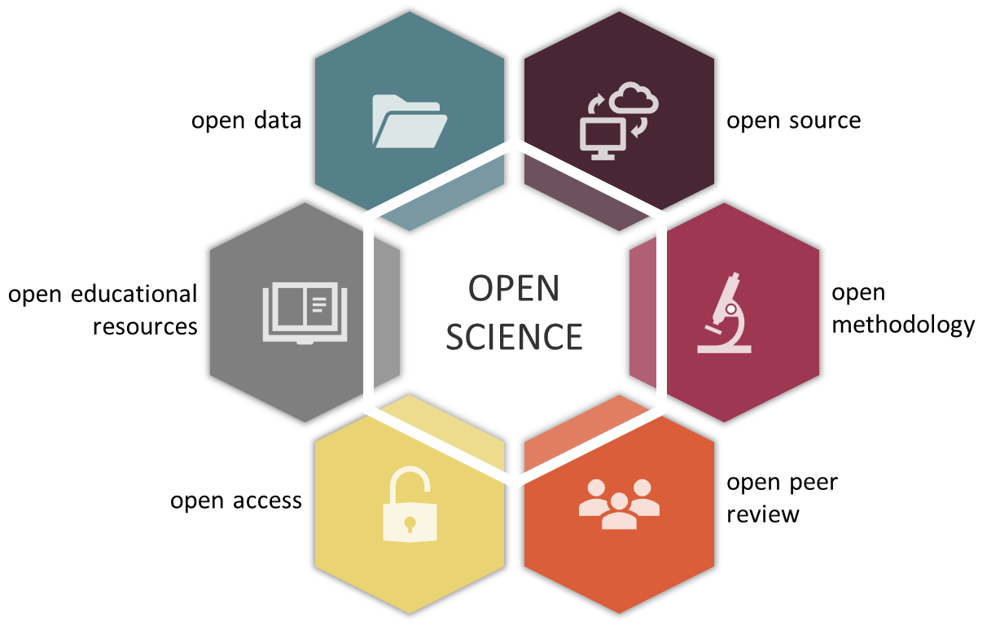
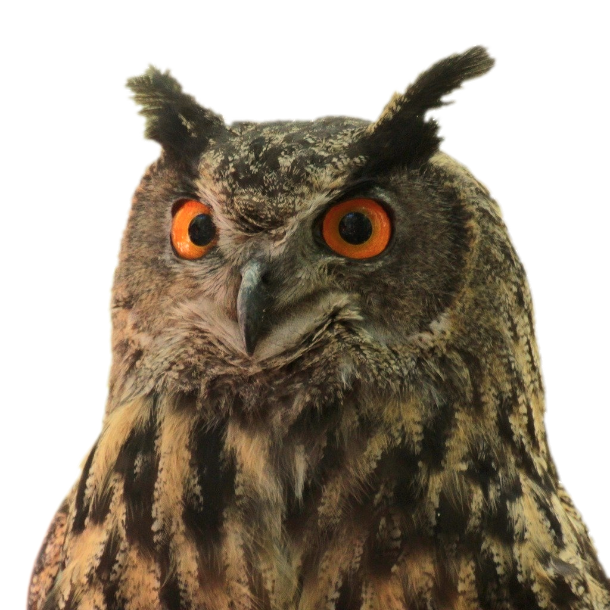
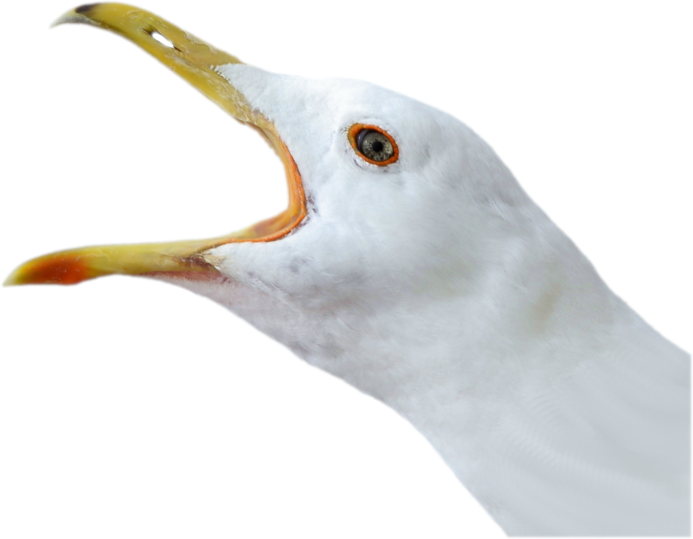
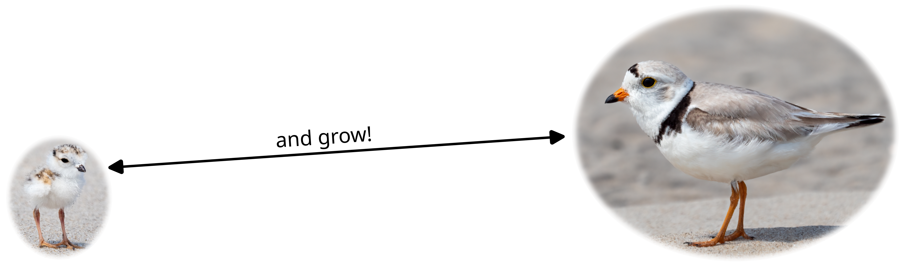
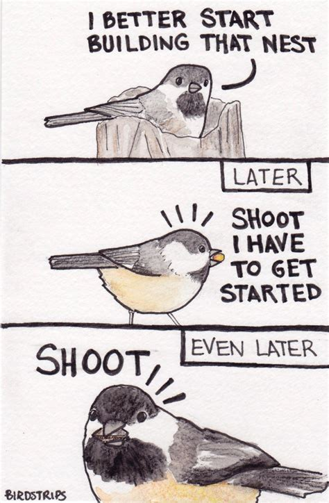
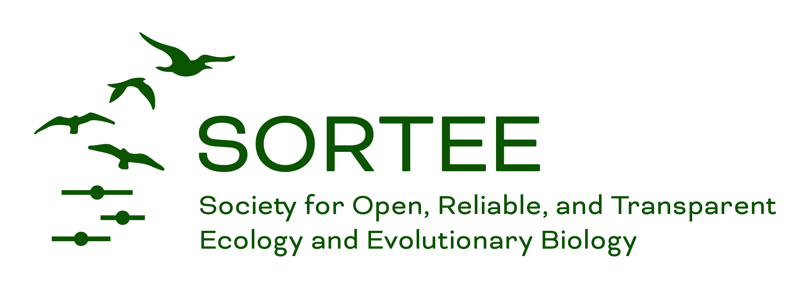
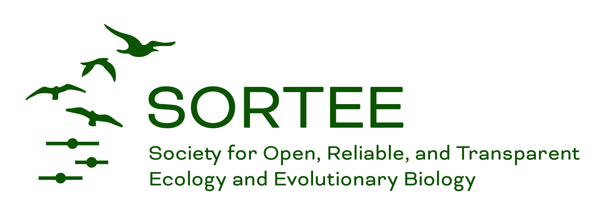
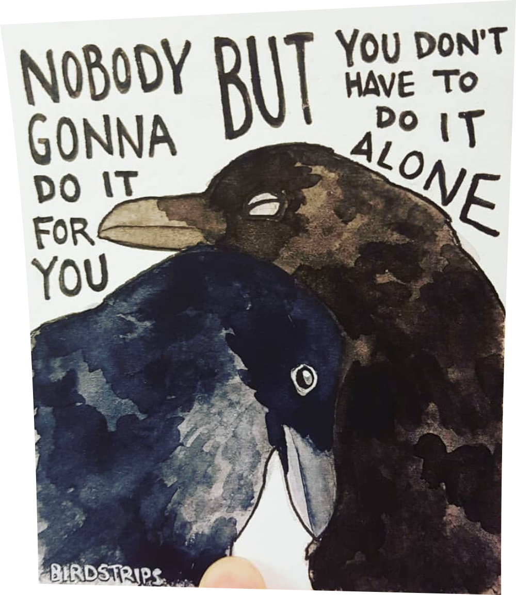

What is Open Science?
Transparent and accessible
- Data
- Methodology
- Code
- Peer Review
- Paper Access

Implementing this can be hard…
- Takes time
- Takes skill
- Takes $$$ (sometimes)
- Takes courage
Whoa! That’s a lot
Why do Open Science?
Why do Open Science?
Good for Science (and Ornithology)
- Support science and research everywhere
- Small non-profits, labs/groups with less funding
- Science is more robust and reliable
- Complex analyses and best practices (e.g., genetics, eBird)
- Improves collegiality and collaboration
- Avian Conservation & international collaborations

Why do Open Science?
Good for You
- Visibility, show your skills
- Get credit for all your work (SOPs, complex analyses)
- Portfolio pieces
You might have to
- Required by granting agencies and government
 
How do we do Open Science?
Open Data, Methodology & Code
1. Get it online!
- Post in a repository: data, code, or catch-all
2. Aim for long-term storage
Open Publication
Open Peer Review
Open Access (without $$$)
- Your library
- Repository for preprints
- Open-access agreements
- Grants/funds for open access
- Preprint servers
Open Access (with some $$$)
- Write funds into your grant
- Look for non-profit journals
Tip 1
Don’t try to do everything
Tip 1: Don’t try to do everything
“Perfect is the enemy of good” – Voltaire
- Be kind to yourself, don’t expect perfection
- You’re allowed to start small

Tip 2: Do one new thing
On every project, expand your skill set, just a little bit
A code example…
- 1st time - keep a script of your analysis
- 2nd time - share the script in a data repository
- 3rd time - share on GitHub (with the browser upload)
- 4th time - share on GitHub (with git!)
Next thing you know, you’re sharing code and learning new tools

Tip 3
It’s okay to be nervous
Tip 3: It’s okay to be nervous
and remember you’re awesome!
“What if I make a mistake?”
- Mistakes happen -> But you’re being transparent!
“What if someone steals my data/idea?”
- It’s easier to make up data than to steal data
- You have a record!
It’s also okay to keep it private to start

Tip 4: Work with others
Organizations / Communities
 

SCO-SOC!
- Networking Mixer - Coming up soon!

Open Science for Ornithologists!
- Tip 1: Don’t try to do everything
- Tip 2: Do one new thing
- Tip 3: It’s okay to be nervous
- Tip 4: Work with others


{kind=link}
{kind=link}
.jpg){kind=link}
.jpg){kind=link}
{kind=link}